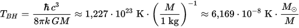
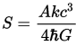
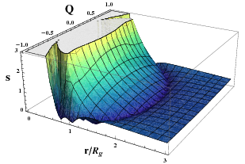
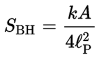
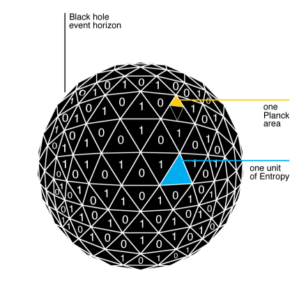
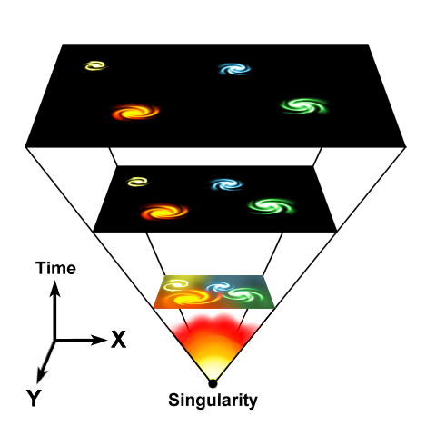

The universe information capacity
Epigraph
“We are an impossibility in an impossible universe.”
‒ Ray Bradbury
Now I will start from some principles of describing my thoughts. That's my first publication here and I will try my best in making this publication interesting and constructive.
Lets begin with the definition. What is the universe? According to wikipedia (which I will do a lot, try to deal with it): "The Universe is all of time and space and its contents. It includes planets, moons, minor planets, stars, galaxies, the contents of intergalactic space, and all matter and energy". Any galaxy, stars, quasars, minor planets, countries and continents and even this blog is a part of our galaxy (how pathetic).
But how we can measure our universe if we don't know what lies beyond? ... Uhm
To find out how huge our universe is we need to digitize it somehow. Here lies another question: how far we have to get to find the minimal informational unit ‒ bit? Part of the observable universe, available for study modern astronomical methods is called Metagalaxy, but I will use the term "observable universe" for the rest of this publication. Regardless on that the number of individual atoms in the observable universe is equal to 10^81 does that mean that we need at least 10^81bit of data to digitize it somehow?
Is it enough? Atoms also consist a set of protons, electrons and neutrons. That means that we need much more bits for digitizing the universe.
Theoretically: How much information units can fit in a certain volume in space?
At first let's describe a direct, but not very obvious connection between information and entropy.
Entropy is the interesting and ambiguous thing in modern physics. Although most of the laws, theorems and phenomena from impossibility of making the perpetual motion machine to definition of "time" per se is due to the definition of entropy.
Entropy has lots of definitions, here I following this:
"Entropy is a non-ordered system of chaos measure means that it's ultimately defined by an amount of different states which system can take"
Let's imagine a sphere which filled by some gas. The surface of the sphere is elastic and it depends on the amount of gas inside.
Air molecules (basically nitrogen, oxygen, carbon dioxide and water) is in the uttermost chaos. And this means that the systems entropy is quite high.
Let's take 2 spheres and connect them using a tubule or something.
For quantitative evaluation of changing thermodynamic entropy there appears logarithms and Boltzmann constant k.
But in isothermal processes (where t=const) we can reduce logarithms and say that entropy is increased 2 times.
If we measure full information of a specific system as where the molecules of air is located and what speed every molecule has inside the sphere on a specific point in the timeline, we are either increasing 2 times (except the tubule) the size of the sphere or pressure consequently we are increasing 2 times the entropy of the sphere which accordingly increases the full information of the system.
You can increase the pressure until you'll get an maximum amount of force per unit area. Everybody knows that if you accumulate the maximum amount of mass on the specific point of area you'll get a singularity or simpler ‒ black hole with a radius of this event horizon which equals to the radius of a given sphere. This means that we got the maximum amount of the material density and, сonsequently, the maximum amount of entropy which means that we got the maximum amount of information which can lie on a specific point of the area. Therefore you can not collect more information (of particles and their location between each other) on a specific point of the area rather than a black hole's.
And there goes something interesting to which the first guessed was Steven Hawking in the 70s. According to Hawking's radiation hypothetical process:

...We can measure the entropy of the black hole:

For example entropy density of a Reissner-Nordström black hole where: c = G = kRN = 1, M = 1 (I needed this)

This means that the maximum amount of entropy which the black hole can handle is proportional to their event horizon area, not the size of the black hole. Also, from the Steven Hawking's "The four laws of black hole mechanics" publication we can realise that using the thermodynamic relationship between energy, temperature and entropy, Hawking was able to confirm Bekenstein's conjecture and fix the constant of proportionality at 1/4:

Which means:
Entropy of the black hole (SBH) is quantitatively equal to their event horizon area (A) expressed in the small units of the planck length (l^2p).
"Small units of the planck length" is pretty obvious thing. Scientists suspected that there are a very small units of the length where the concept of the length and distance begins to lose their meaning and fades in space-time. Yep, this is a plank length unit which is equals to ~1.616199(97)e-35m. If we take a triangle with size "((1.616199(97)e-35)^2×√3)÷4 ≈ 1.13107e-70" and then cover the black hole's surface (more precisely event horizon surface) by the grid of this triangles we will get a quantitative representation of the black hole's entropy. And if we write on each triangle 1 or 0 (guess what we are representing) and then count them we will get the maximum amount of the information area can handle on.

Therefore the maximum amount of information which can theoretically contains inside the some point in space equals to the area of the sphere expressed by planck triangles it's represented by.
In total: The maximum amount of information in space is proportional to the surface area of the sphere it's represented by using the planck length.
But actually there much less, because we are not living in the black hole. Isn't it? There it is possible to make a retreat and talk about the holographic universe theory. Relying on which we are all holographic events projection which exist somewhere on the theoretical boundary of the universe, not the material units. I'll describe more about this here.
Briefly: We are not living in the black hole.
Then we need to find the diameter of the observable universe and, according the formula, find the surface area of the sphere and divide it by the planck area (~1.13107e-70m^2). And how do we find it? We need to know the age of our universe and nothing more. The WMAP Observatory team says that our observable universe is 13.75±0.13e+9 years old. The next calculations will take that the universe expansion has a constant speed (which is not an this's important) and does not exceeds the speed of light.

And ofcourse it must be mentioned that we have a deal between 2 contradictions. On the one side we had that sphere with the ideal gas inside and entropy of this sphere was proportional to their volume. On the other side we had a black hole where the material was a maximally gravitationally connected between it's molecules. There entropy was proportionally depended by their surface area. In our universe there is the gravity but it's not so strong than black hole's which means that we have something between.
According that the speed of light equals to 299,792,458m/s and the age of the universe is 13.75±0.13e+9 years we can find the area of the surface of our universe using the simple formula: S = πd2
13.75±0.13e+9 × 299,792,458 ≈ 4.1221463e+18m ‒ diameter of the universe
3.1415926 × (4.1221463e+18)^2 ≈ 5.3382225e+37m^2 ‒ area of the sphere which represents our observable universe
((1.61622837e-35)^2 × √3) ÷ 4 ≈ 1.13111324e-70m^2 ‒ planck unit area (equilateral triangle)
5.3382225e+37 ÷ 1.13111324e-70 ≈ 4.71944126e+107 ‒ planck units = (bits)?
Here we've measured our universes maximum information capacity such as we see it today. But we mentioned that we need to take something between and that means that we need to calculate the maximum information capacity of the universe before Big Bang (precisely we will take the Planck era, not the singularity) and find an average between them. (I will take the singularity epoch diameter of the universe as 0):
0 + 10^-43 = 10^-43s
10^-43 × 3,17098e-8 ≈ 3.17098e-51 years ‒ diameter of the universe in plack epoch
3.1415926 × (3.17098e-51)^2 ≈ 3.1589072e-101m^2 ‒ area of the sphere which represents the universe in planck epoch
((3.1589072e-101)^2 × √3) ÷ 4 ≈ 4.3209016 × 10^-202m^2 ‒ planck unit area of the universe in planck epoche(equilateral triangle)
4.3209016 × 10^-202 ÷ 1.13111324e-70 ≈ 3.8200433e-132 bits
And finally the average:
(4.71944126e+107 + 3.8200433e-132) ÷ 2 ≈ 2.35972063e107 bits
Which is equals to:
2.9496507875e+106 ≈ 2.95e+106 bytes
2.9496507875e+103 ≈ 2.95e+103 kilobytes
2.9496507875e+100 ≈ 2.95e+100 megabytes
2.9496507875e+97 ≈ 2.95e+97 gigabytes
2.9496507875e+91 ≈ 2.95e+91 petabytes
2.9496507875e+82 ≈ 2.95e+82 yottabytes
That's the maximum theoretical informational capacity of our observable universe (which is not, almost) at some specific point in time.
But we can measure the universe by itself including their state in every point in time. Using the time as a material object by itself. At first we will find the informational capacity of the universe from planck epoch to nowdays.
3.8200433e-132 + 4.71944126e+107 ≈ 4.7194412e+107 bits
So, in the last 13.75±0.13e+9 years the universe maximum information amount is 4.7194412e+107. Then we will calculate the full amount information of the universe existing from their born to death in the distant future (~10^100^100 years).
10^10000 ÷ 3.75±0.13e+9 × 4.7194412e+107 ≈ 1.2585145e+10098 bits
Which is equals to:
1.573143125e+10072 ≈ 1.573e+10072 yottabytes
That's the maximum theoretical informational capacity of the universe at all, from the beginning to their death.
That's how much you need to fully digitize the universe epoch.